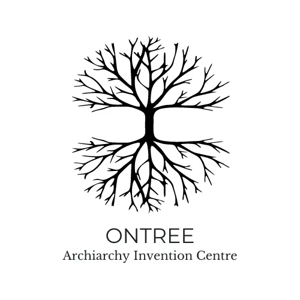
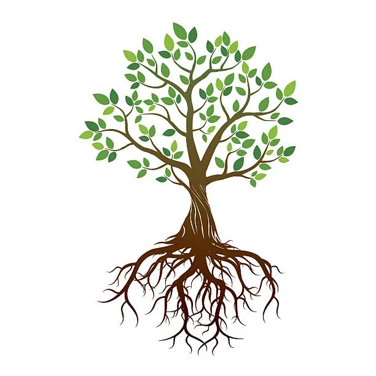
ONTREE
Archiarchy Invention Centre
- …
ONTREE
Archiarchy Invention Centre
- …
- Ontree Archiarchy Invention Centre - At Ontree, we are guardians of the land - pioneering a cultural shift towards Archiarchy,- a new way of relating to each other and the world around us. - Through collaborative research and experimentation, - we are fostering a rapid learningenvironment- where Archetypal Love guides our actions and interactions, creating possibilities for transformation and thriving.- We are a group of edge workers who are committed to creating other possibilities - than the options that modern culture provides. - We want Gaia to thrive. Ontree is the field where Archiarchy unfolds. It is a rapid learning - environment that creates the soil for Evolution to happen. - We are in the middle of a cultural shift, from Patriarchy into Archiarchy.A new way to relate to each other, and to the non human world is unfolding as we go. There is no recipe. There is no blue print. We don't know how it goes as we have no reference point. We are learning by doing, we experiment and try things out. We are learning to create out of nothing in everyday life.- Here is where the fruits of collaborative research into Archiarchy in Aotearoa (New Zealand) are shared abundantly, dropping seeds of Possibility and Transformation on the fertile forest floor. - It is not a place of private ownership, rather we regard ourselves as guardians of the land.
- Ontree Villagers - Love. Clarity. Transformation.
 - Love. Clarity. Creation. Evolution. - Clarity. Love. Creation. Healing.
- Love. Clarity. Creation. Evolution. - Clarity. Love. Creation. Healing.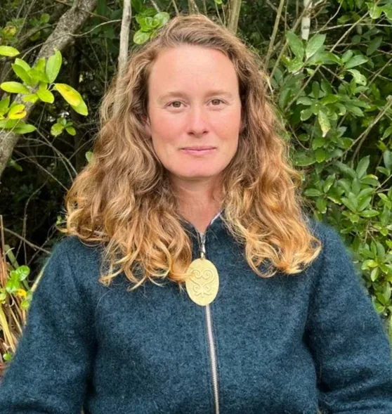
- Love. Abundance. Transformation.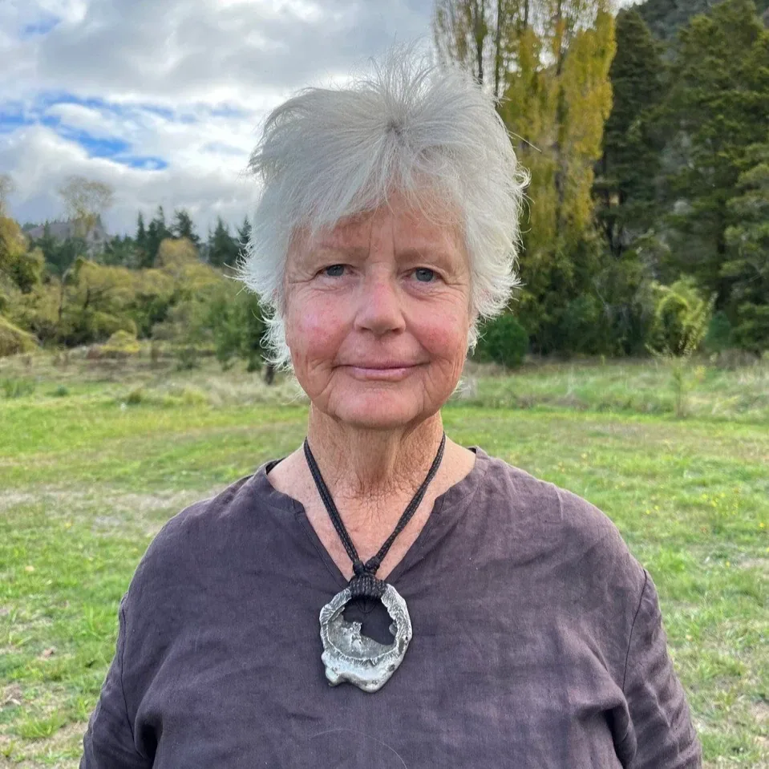
- ##### Courage- . Creation. Transformation. - Simplicity. Love. Presence.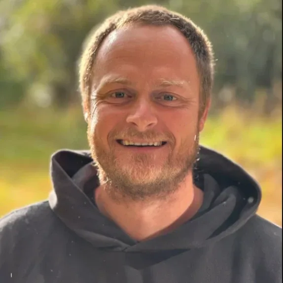
- Clarity. Empowerment. Love. Creation.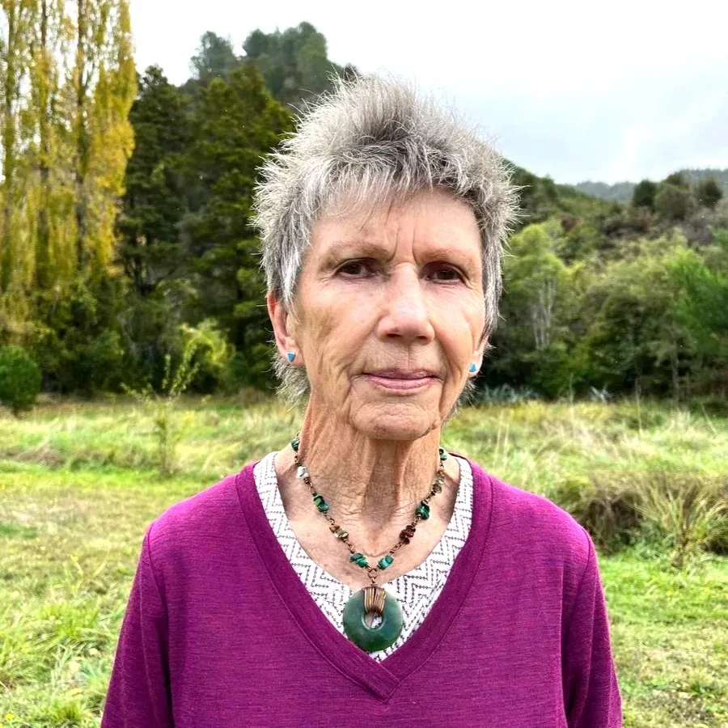
- Patricia McGee- Discovery. Empowerment. Beauty. - Hannah Abouzahrah- Connection. Integrity. Oneness. - Gabriela Fagundes- Love. Clarity. Initiation. Possibility. -
We are in a cultural shift, from Matriarchy to Patriarchy to Archiarchy...
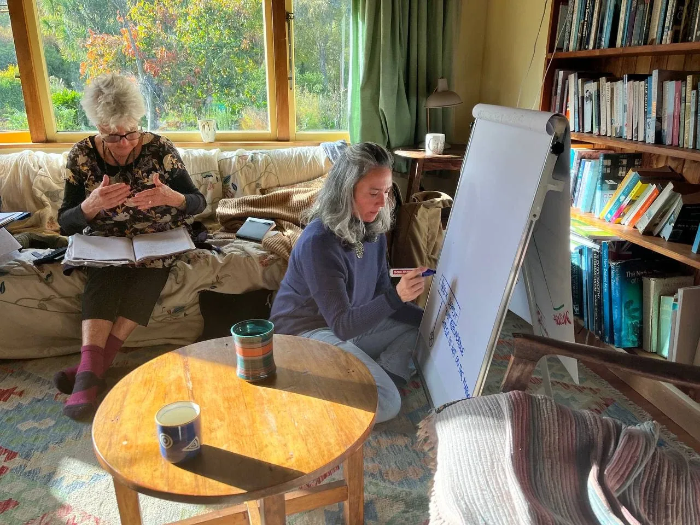
- Archy' means a social organization, a government, a set of agreements, as in matriarchy or patriarchy. From this, Culture starts to emerge.- In early Greek philosophy, 'arche', meant a substance or primal element, something that is at the beginning, a first principle. For Aristotle, it meant an actuating principle (a cause). Arche means Archetypal Love, the cause of everything. - Culture is created and experienced from stories, from the way we communicate, the way we live, the way we relate to children, to each other, the way we relate to feelings, to food, with money, with Gaia, with resources. Culture emerges from me, from you, in every interaction, choice and creation. - Archiarchy is a culture that is rapidly emerging around the world. This Culture emerges from Archetypal Love, which is Radically Responsible. Archiarchy means a group of more than 2 people, where the Initiated Archetypal Feminine collaborates with the Initiated Archetypal Masculine, to manifest Archetypal Love in action. - Do you want to Collaborate with us? - In Archiarchy, collaboration unfolds, and we find possibilities to grow together. - Here, we offer you 4 possibilities to contribute to Ontree thriving. - If you have other ideas, send them to us! - Your Questions, encouragements, possibilities, feedback, and expertise.
- Support us with your work. Join us in our physical space and help us build, hold space and create. What is your specialty? What are your gifts?
- Donations... Every amount helps! Also, private loan opportunities are welcome.
- Buy a branch for $1500 - ∞. The branch includes 10 coaching sessions. To schedule contact...
- FOR MONETARY CONTRIBUTIONS:- New Zealand:- Account Name: Ontree Centre - 38-9009-0308686-03 - Reference:Gift Ontree- Overseas:- Account Holder: Tristan Girdwood - BIC: TRWIBEB1XXX - IBAN: BE29 9671 4726 5564 - Reference:Ontree Branch or Gift
-
Ontree Phases- It would be naive to think that the stages of a vision are a linear recipe to follow. We extract different dimensions of Ontree to stay in the small now and focus the energy in the next step even though we can already see the fourth and the twelfth... - And elements from different phases may take place simultaneously... 1- PHASE 1- FINDING EACH OTHER - The Infinity Ring of Ontree is getting together. Who is in? We hold space for conversaviews for and with each other and converge together to distill what is in the way and amplify what is already working. Writing down the codex and distilling Bright and Shadow purposes. - Finding the land and gathering the finances. 2- PHASE 2- GETTING REAL - We move onto the land and build infrastructure, update and refine the energetic structure of the - Torus.- We define nodes and start Ontree projects that open new possibilities for Archiarchy. - What results are we creating? 3- PHASE 3- GROWING - It is time to open to others who want to join and expand Ontree, letting it become a bigger universe, crosspollinating with different people and possibilities of living here and continuing to invent Archiarchy. What is required to add new people to an existing sytem? 4- PHASE 4- THE CENTRE - We build an Initiation and Healing Centre that can hold up to 30 people. This will be the physical space for trainings, workshops, group discoveries and an Archan Learning Centre for our children and adults alike.
-
➛ Right now we are in Phase 1 and we have found land!- ### The next step is to define a proposal for the vendor and top up the finances.
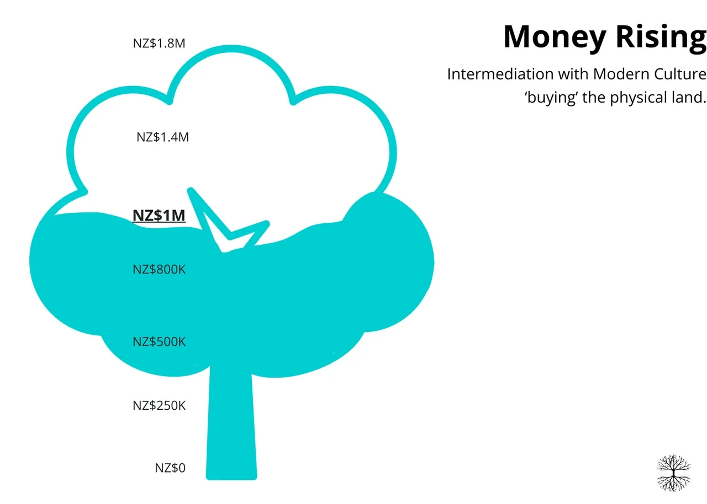
-
"The secret of change is to focus all of your energy, not on fighting the old, but on building the new"- Socrates
-
Projects and Offers- These are the Projects and Offers that are germinating at Ontree Centre.
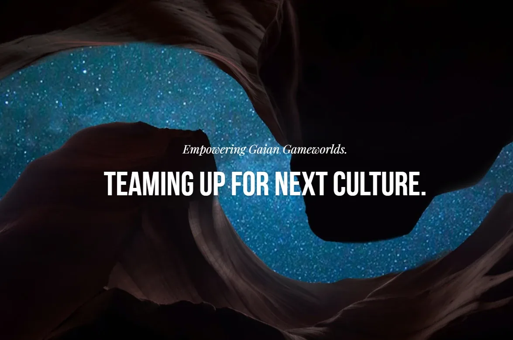
- Archiarchy River brings people together to combine their savings in order to empower each other's - Gaian Gameworldsin the context of Possibility Management.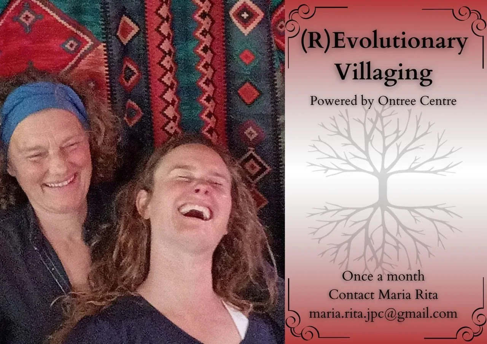
- ## R(E)volutionary Villaging- R(E)volutionary Villaging is an in-person space where once a month the village is invited to come together for a villager to go through a specific Initiation. - This is a space offered and held by Ontree Centre, fuelled by our passion for the evolution of the village, and by expanding what an Initiation space can look like. We are reinventing how it goes to hold space for Healing, Transformation and Initiation, moving away from the recipe and coming closer to what the real necessity is in the small here and now with each individual. - Some of the processes we offer are: - Birth Process, Calling the Being Through, Sexual Space Clean-out, Relationship Space Clean-out, Unfolding Process, Diaphragm Process, Stellating Feelings, E-Body Retrieval, Unfreeze Fear, Make a Boundary, Relocate Point of Origin, Get your Centre Back. - For more information contact Maria Rita: maria.rita.jpc@gmail.com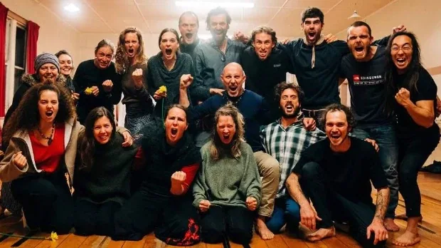
- Rage Club - The purpose of Rage Club is to change your relationship to the feeling and emotion of anger so you can consciously and productively use the energy and information of anger as an adult in your daily life, without being possessed or overwhelmed by it. Find online and offline - Rage Clubs here. - "Maybe the journey isn't so much about becoming anything. Maybe it's about un-becoming everything that isn't really you, so you can be who you were meant to be in the first place." - Paulo Coelho
- Ontree Resources - Videos, Interviews, Articles and Past Newsletters. - PAST NEWSLETTERS
-
Writings from Ontree Centre- Thoughts, musings, reports, distinctions and inspiration. February 25, 2024The following writing is my attempt to add some more bread crumbs to the body of work researched...- Read more... (archived — not captured)January 15, 2024What compass guides your choices in life? It is so easy to forget that you make a choice in...- Read more... (archived — not captured)January 15, 2024Humans love colour! Think of that big red fruit in the forest standing out from all the greens...- Read more... (archived — not captured)January 15, 2024Brought about by Pain - the Great Awakener Here I sit at Ingrid and Toms in the Marahau Valley...- Read more... (archived — not captured)
-
Get in touch!- +64 2040877083 or e-mail Ana at - hello@ananorambuena.org- [or]- ontreecentre@gmail.com
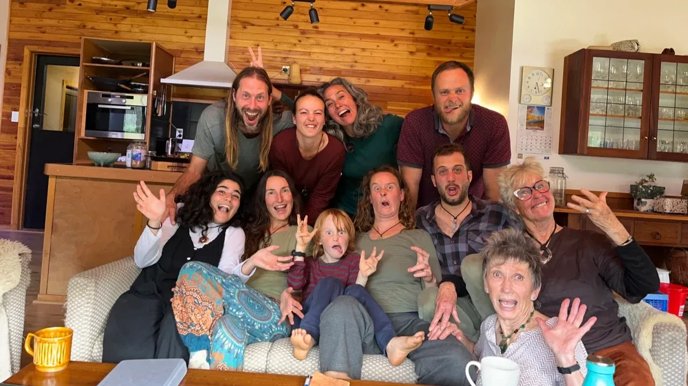
- Sign up for our- Monthly Newsletter- Receive legends, recommendations, experiments, videos, articles, gems and offers that empower you to inhabit and create Archiarchy, where your purpose and gifts have a place to land.